Selamat Datang di Platform Pembelajaran Biologi
Belajar biologi dengan cara yang menyenangkan dan interaktif
Petunjuk Penggunaan Platform
1. Baca Materi
Mulai dengan membaca materi pembelajaran yang telah disediakan
2. Tonton Video
Pelajari melalui video penjelasan yang lebih interaktif
3. Selesaikan LKPD
Kerjakan lembar kerja peserta didik untuk memperdalam pemahaman
4. Evaluasi Diri
Uji pemahaman Anda melalui soal-soal evaluasi
Fitur Pembelajaran
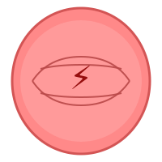
Kata Pengantar
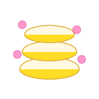
Pemetaan Kompetensi
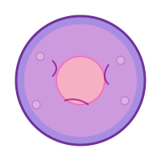
Peta Konsep
Glosarium
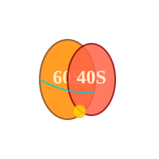
Materi Pembelajaran
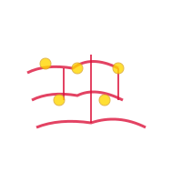
Video Pembelajaran
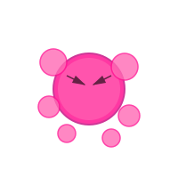
Game Latihan Soal
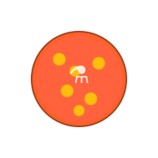
E-LKPD
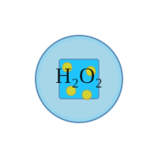
Evaluasi
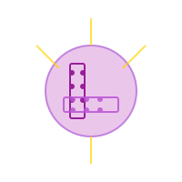
Refleksi
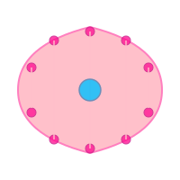
Daftar Pustaka
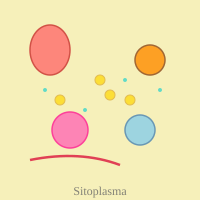
Profil Devloper
Kata Pengantar
Puji syukur penulis panjatkan kepada Tuhan Yang Maha Esa, karena atas rahmat dan karunia-Nya penulis dapat menyelesaikan pengembangan website pembelajaran interaktif SELXPLORE pada materi Struktur dan Fungsi Sel. Website ini disusun sebagai media pembelajaran yang diharapkan dapat membantu peserta didik memahami konsep sel secara lebih menarik, interaktif, dan bermakna, sehingga proses pembelajaran menjadi lebih aktif serta mendukung ketercapaian tujuan pembelajaran biologi.
Website SELXPLORE dirancang dengan menggunakan model Mind Mapping, Exploration, Explanation, Discovery, Application, Communication, dan Evaluation (MEEDACE). Melalui tahapan pembelajaran tersebut, peserta didik diharapkan mampu mengembangkan pemahaman konsep secara bertahap, mulai dari mengemukakan ide awal, mengeksplorasi informasi, melakukan pengamatan, menganalisis hasil penyelidikan, hingga mengomunikasikan hasil pemahaman yang diperoleh. Selain membantu memahami materi struktur dan fungsi sel, website ini juga mendukung pengembangan keterampilan proses sains seperti mengamati, mempertanyakan, memprediksi, merencanakan penyelidikan, serta menganalisis data hasil pengamatan.
Pengembangan website SELXPLORE ini juga bertujuan untuk menumbuhkan keterampilan abad ke-21 dan sikap ilmiah peserta didik, khususnya keterampilan etos kerja (work ethic) seperti disiplin, tanggung jawab, kerja sama, dan partisipasi aktif selama proses pembelajaran berlangsung. Dengan adanya media pembelajaran ini, penulis berharap peserta didik dapat lebih mudah memahami materi, memiliki pengalaman belajar yang lebih menyenangkan, serta mampu meningkatkan kemampuan berpikir kritis, kolaboratif, dan komunikatif dalam kegiatan pembelajaran.
Website pembelajaran SELXPLORE ini masih memiliki berbagai kekurangan, sehingga penulis sangat mengharapkan kritik, saran, dan masukan yang membangun dari berbagai pihak demi penyempurnaan media pembelajaran ini di masa mendatang. Penulis berharap website ini dapat memberikan manfaat bagi peserta didik maupun pendidik dalam mendukung proses pembelajaran biologi yang lebih inovatif dan efektif.
Malang, Mei 2026
Penulis
Pemetaan Kompetensi
Kompetensi Inti
A. Pengetahuan (KI-3):
Memahami, menerapkan, dan menganalisis pengetahuan faktual, konseptual, dan prosedural tentang struktur dan fungsi sel sebagai unit terkecil kehidupan
B. Keterampilan (KI-4):
Mengolah, menalar, dan menyaji dalam ranah konkret dan ranah abstrak terkait dengan pengembangan dari yang dipelajarinya di sekolah tentang biologi sel
Kompetensi Dasar
A. Memahami komponen kimiawi sel, struktur, dan fungsi sel sebagai unit terkecil kehidupan
B. Menyajikan hasil pengamatan tentang struktur dan fungsi berbagai jenis sel melalui mikroskop
Indikator Pencapaian
1. Aspek Pengetahuan (Kognitif)
Pemahaman Konsep:
- Mendeskripsikan sejarah penemuan sel
- Menjelaskan komponen kimiawi penyusun sel (air, protein, karbohidrat, lemak, vitamin, mineral)
- Mengidentifikasi struktur dan fungsi organel-organel sel
- Membedakan sel prokariotik dan eukariotik
- Menjelaskan perbedaan sel hewan dan tumbuhan
- Menjelaskan mekanisme transpor melalui membran sel (difusi, osmosis, transpor aktif)
- Memahami proses metabolisme sel
- Menjelaskan proses pembelahan sel (mitosis dan meiosis)
Analisis:
- Menganalisis hubungan antara struktur dan fungsi berbagai organel sel
- Menganalisis perbedaan mekanisme transpor pasif dan aktif
- Membandingkan proses mitosis dan meiosis
2. Aspek Keterampilan (Psikomotorik)
Keterampilan Proses:
- Menggunakan mikroskop untuk mengamati struktur sel
- Membuat preparat basah sel tumbuhan dan hewan
- Menggambar hasil pengamatan sel dengan tepat
- Mengidentifikasi bagian-bagian sel dari hasil pengamatan
Keterampilan Teknologi:
- Menggunakan media digital untuk mempelajari struktur sel
- Mengakses dan memanfaatkan video pembelajaran interaktif
- Menggunakan game edukasi untuk latihan soal
Keterampilan Berpikir Ilmiah:
- Mengamati dan mengidentifikasi fenomena seluler
- Merumuskan hipotesis terkait fungsi sel
- Menganalisis data hasil pengamatan
- Menarik kesimpulan berdasarkan bukti
3. Aspek Sikap (Afektif)
Sikap Ilmiah:
- Menunjukkan rasa ingin tahu terhadap dunia seluler
- Menghargai keanekaragaman bentuk dan fungsi sel
- Menunjukkan ketelitian dalam melakukan pengamatan
- Menunjukkan rasa tanggung jawab dalam menggunakan media pembelajaran digital
Tujuan Pembelajaran
Setelah mempelajari materi melalui website CellXplore, peserta didik mampu:
1. Memahami Konsep Dasar Sel
- Menjelaskan sel sebagai unit struktural dan fungsional terkecil kehidupan
2. Menganalisis Struktur dan Fungsi
- Mengidentifikasi organel-organel sel dan fungsinya
- Menganalisis perbedaan sel prokariotik dan eukariotik
- Membandingkan struktur sel hewan dan tumbuhan
3. Memahami Proses Seluler
- Menjelaskan mekanisme transpor membran
- Memahami proses metabolisme dalam sel
- Menganalisis tahapan pembelahan sel
4. Mengaplikasikan Pengetahuan
- Mengaitkan konsep sel dengan fenomena kehidupan sehari-hari
- Memecahkan masalah terkait struktur dan fungsi sel
Peta Konsep
Peta konsep ini membantu kalian memahami struktur sel hewan, sel tumbuhan, serta perbedaan keduanya secara lebih mudah dan menarik. Melalui hubungan antarkonsep yang tersusun secara jelas, kalian dapat mempelajari materi dengan lebih terarah, seru, dan mudah dipahami.
Glosarium
Adenosin Trifosfat (ATP)
Molekul berenergi tinggi yang berfungsi sebagai sumber energi utama untuk proses-proses seluler.
Adhesi Sel
Kemampuan sel untuk menempel pada sel lain atau permukaan.
Amitosis
Pembelahan sel yang terjadi secara langsung tanpa melalui tahap-tahap tertentu, biasa terjadi pada sel prokariotik.
Anafase
Tahap pembelahan sel ketika kromatid saudara terpisah dan bergerak menuju kutub yang berlawanan.
Apoptosis
Kematian sel terprogram.
Autofagi
Organisme yang dapat membuat makanan sendiri melalui fotosintesis atau kemosintesis.
Badan Golgi
Organel sel yang berfungsi dalam modifikasi, penyortiran, dan pengemasan protein untuk sekresi.
Bakteri
Organisme prokariotik uniseluler yang tidak memiliki membran inti.
Biofilm
Komunitas bakteri yang menempel pada permukaan.
Biosintesis
Proses pembentukan senyawa kompleks dari senyawa sederhana di dalam sel.
Cairan Sitoplasma
Cairan kental di dalam sel yang mengandung air, ion, dan molekul organik.
Campylobacter
Contoh bakteri yang memiliki struktur sel prokariotik.
Diferensiasi Sel
Proses sel menjadi terspesialisasi untuk fungsi tertentu.
Difusi
Pergerakan molekul dari area berkonsentrasi tinggi ke area berkonsentrasi rendah.
Difusi Terfasilitasi
Difusi yang dibantu oleh protein transpor dalam membran sel.
Dinding Sel
Struktur kaku di luar membran sel yang memberikan perlindungan dan dukungan, ditemukan pada sel tumbuhan, jamur, dan bakteri.
DNA (Asam Deoksiribonukleat)
Molekul yang membawa informasi genetik untuk perkembangan dan fungsi sel.
Ekskresi Sel
Proses pengeluaran zat sisa metabolisme dari sel.
Eksositosis
Proses pengeluaran zat dari dalam sel ke luar sel melalui vesikel.
Endositosis
Proses pemasukan zat ke dalam sel dengan cara membentuk vesikel dari membran sel.
Endosimbiosis
Teori yang menjelaskan asal-usul mitokondria dan kloroplas dari bakteri yang hidup di dalam sel eukariotik.
Enzim
Protein yang berfungsi sebagai katalisator dalam reaksi biokimia sel.
Eukariotik
Sel yang memiliki membran inti dan organel-organel yang terikat membran.
Fagositosis
Jenis endositosis di mana sel menelan partikel padat yang besar.
Fiksasi
Proses pengawetan struktur sel untuk pengamatan mikroskopis.
Fotosintesis
Proses pembuatan makanan pada tumbuhan menggunakan energi cahaya.
Fosfolipid
Molekul lemak yang membentuk struktur dasar membran sel.
Gap Junction
Saluran komunikasi antar sel hewan.
Glikokaliks
Lapisan karbohidrat pada permukaan luar membran sel.
Glikolisis
Proses pemecahan glukosa menjadi piruvat di sitoplasma.
Granum
Tumpukan tilakoid di dalam kloroplas.
Hidrolisis
Pemecahan molekul dengan penambahan air.
Heterotrof
Organisme yang tidak dapat membuat makanan sendiri dan bergantung pada organisme lain.
Hipertonik
Larutan dengan konsentrasi zat terlarut lebih tinggi dibandingkan larutan lain.
Hipotonik
Larutan dengan konsentrasi zat terlarut lebih rendah dibandingkan larutan lain.
Homeostasis
Kemampuan sel untuk mempertahankan kondisi internal yang stabil.
Imobilisasi
Proses membuat sel atau enzim tidak bergerak.
Interfase
Fase di antara pembelahan sel ketika sel tumbuh dan mereplikasi DNA.
Isotonik
Larutan dengan konsentrasi zat terlarut yang sama dengan larutan lain.
Jaringan
Kumpulan sel yang memiliki struktur dan fungsi yang sama.
Kapsul
Lapisan lendir di luar dinding sel bakteri.
Kariosintesis
Proses pembentukan zat dalam sel dengan bantuan karion.
Karioteka
Membran yang membungkus inti sel.
Karsinogen
Zat yang dapat menyebabkan kanker dengan merusak sel.
Katabolisme
Proses pemecahan molekul kompleks menjadi sederhana.
Kemiosmosis
Produksi ATP menggunakan gradien proton.
Klorofil
Pigmen hijau pada kloroplas yang menangkap energi cahaya.
Kloroplas
Organel sel tumbuhan yang berfungsi sebagai tempat fotosintesis.
Kromatin
Kompleks DNA dan protein yang membentuk kromosom di dalam nukleus.
Kromosom
Struktur yang mengandung DNA dan protein yang membawa informasi genetik.
Kutub Sel
Ujung-ujung sel yang berlawanan selama pembelahan sel.
Lisosom
Organel yang mengandung enzim pencernaan untuk memecah materi.
Lipid
Senyawa organik yang tidak larut dalam air, termasuk lemak dan fosfolipid.
Lisis
Pecahnya sel karena masuknya air berlebihan.
Makromolekul
Molekul besar yang kompleks seperti protein, karbohidrat, dan asam nukleat.
Meiosis
Pembelahan sel yang menghasilkan sel gamet dengan setengah jumlah kromosom.
Membran Plasma
Lapisan selektif permeabel yang mengelilingi sel.
Metabolisme
Semua reaksi kimia yang terjadi di dalam sel.
Metafase
Tahap pembelahan sel ketika kromosom berjajar di bidang ekuator.
Mikrofilamen
Filamen protein tipis yang merupakan bagian dari sitoskeleton.
Mikrotubulus
Struktur tabung protein yang merupakan komponen sitoskeleton.
Mitokondria
Organel yang berfungsi sebagai tempat respirasi seluler dan penghasil energi.
Mitosis
Pembelahan sel yang menghasilkan dua sel anak identik secara genetik.
Mutasi
Perubahan pada materi genetik sel.
Nekrosis
Kematian sel akibat cedera atau kerusakan.
Nukleolus
Struktur di dalam nukleus yang berfungsi dalam sintesis ribosom.
Nukleus
Organel yang mengandung materi genetik dan mengendalikan aktivitas sel.
Organel
Struktur khusus di dalam sel yang memiliki fungsi tertentu.
Osmosis
Difusi air melalui membran semipermeabel dari larutan hipotonik ke hipertonik.
Pinositosis
Jenis endositosis di mana sel menelan cairan.
Plastida
Organel pada sel tumbuhan yang mencakup kloroplas, kromoplas, dan leukoplas.
Plasmodesmata
Saluran komunikasi antar sel tumbuhan.
Prokariotik
Sel yang tidak memiliki membran inti.
Profase
Tahap pertama pembelahan sel ketika kromosom mulai memadat.
Protein
Makromolekul yang tersusun dari asam amino dan memiliki berbagai fungsi seluler.
Protein Integral
Protein yang tertanam dalam membran sel.
Protein Perifer
Protein yang menempel pada permukaan membran sel.
Respirasi Seluler
Proses pemecahan glukosa untuk menghasilkan ATP.
Retikulum Endoplasma (RE)
Jaringan membran di dalam sitoplasma.
RE Kasar
Retikulum endoplasma yang ditempeli ribosom.
RE Halus
Retikulum endoplasma tanpa ribosom.
Ribosom
Organel yang berfungsi sebagai tempat sintesis protein.
RNA (Asam Ribonukleat)
Molekul yang terlibat dalam sintesis protein.
Sentriol
Organel yang berperan dalam pembelahan sel.
Sentromer
Daerah penyempitan pada kromosom yang menghubungkan kromatid saudara.
Sel
Unit struktural dan fungsional terkecil dari kehidupan.
Sel Hewan
Sel eukariotik tanpa dinding sel dan kloroplas.
Sel Tumbuhan
Sel eukariotik dengan dinding sel dan kloroplas.
Siklus Sel
Rangkaian peristiwa yang dialami sel dari satu pembelahan ke pembelahan berikutnya.
Sitoskeleton
Jaringan serat yang memberikan struktur dan dukungan pada sel.
Sitoplasma
Materi di dalam sel di luar nukleus.
Sitokinesis
Pembelahan sitoplasma yang terjadi setelah pembelahan nukleus.
Telofase
Tahap akhir pembelahan sel ketika membran nukleus terbentuk kembali.
Teori Sel
Teori yang menyatakan bahwa semua makhluk hidup tersusun dari sel.
Tilakoid
Struktur membran di dalam kloroplas yang mengandung klorofil.
Transpor Aktif
Pergerakan molekul melawan gradien konsentrasi yang memerlukan energi.
Transpor Pasif
Pergerakan molekul mengikuti gradien konsentrasi tanpa energi.
Vakuola
Organel berbentuk kantung yang berfungsi untuk penyimpanan.
Vesikel
Kantung kecil bermembran yang mengangkut materi di dalam sel.
Zat Terlarut
Partikel yang larut dalam pelarut membentuk larutan.
Materi Pembelajaran
Pada tahap pembelajaran ini, kalian akan mempelajari materi sel hewan dan sel tumbuhan melalui e-book yang telah tersedia. Di dalam e-book terdapat berbagai informasi pendukung seperti gambar, penjelasan materi, dan ilustrasi yang membantu kalian memahami struktur, fungsi, serta perbedaan sel hewan dan sel tumbuhan dengan lebih mudah. Gunakan materi dalam e-book secara aktif agar proses belajar menjadi lebih seru, terarah, dan membantu kalian memahami konsep dengan lebih mendalam.
Bab 1: Sel - Unit Terkecil Kehidupan
Sel adalah unit terkecil kehidupan yang dapat melakukan semua fungsi kehidupan. Semua makhluk hidup terdiri dari satu sel atau lebih.
Struktur Sel:
- Membran Sel: Lapisan pelindung yang mengontrol masuk keluarnya zat
- Sitoplasma: Cairan sel yang mengandung berbagai organel
- Inti Sel (Nukleus): Organel yang mengandung DNA dan mengontrol aktivitas sel
Organel Sel:
- Mitokondria - Pusat energi sel
- Ribosom - Tempat sintesis protein
- Retikulum Endoplasma - Jaringan transportasi
- Golgi Apparatus - Pengepakan produk sel
Bab 2: Jaringan - Kumpulan Sel Sejenis
Jaringan adalah kumpulan sel yang sejenis dan bekerja sama untuk melakukan fungsi tertentu.
Jenis Jaringan pada Tumbuhan:
- Jaringan Dermal
- Jaringan Vaskular
- Jaringan Dasar
Bab 3: Organ - Kumpulan Jaringan
Organ adalah kumpulan dari beberapa jenis jaringan yang bekerja sama untuk melakukan fungsi tertentu.
Video Pembelajaran
Di setiap pertemuan, kalian juga akan belajar melalui video pembelajaran yang sudah disediakan pada link berikut ini. Yuk, klik dan tonton videonya agar materi lebih mudah dipahami, lebih seru, dan membantu kalian memahami konsep-konsep penting dengan cara yang lebih menarik. Jangan lupa simak videonya sampai selesai supaya kalian makin paham dengan materi yang dipelajari di setiap pertemuan!

Pengertian Sel, Jenis Sel dan Peta Konsep Komponen Sel
Klik untuk membuka di YouTube

Membran Sel, Dinding Sel, Sitoplasma dan Sitoskeleton
Klik untuk membuka di YouTube

Ribosom dan Sentrosom
Klik untuk membuka di YouTube

Nukleus, Retikulum Endoplasma, Badan Golgi, Lisosom & Vakuola
Klik untuk membuka di YouTube

Mitokondria, Kloroplas, Plastid, Peroksisom & Glioksisom
Klik untuk membuka di YouTube

Bahan Ajar Sel - Pembelahan Mitosis
Klik untuk membuka di YouTube
🎮 Game Latihan Soal 🎮
Untuk menguji pemahaman kalian, tersedia juga games latihan soal tentang sel hewan dan sel tumbuhan yang dikemas secara menarik dan menyenangkan. Melalui games ini, kalian dapat berlatih memahami materi sambil belajar dengan suasana yang lebih seru dan tidak membosankan. Yuk, coba games-nya dan lihat sejauh mana pemahaman kalian terhadap materi yang telah dipelajari!
Lembar Kerja Peserta Didik (LKPD)
Pada tahap pembelajaran ini, kalian akan mengerjakan LKPD sesuai instruksi guru pada setiap pertemuan. Melalui LKPD ini, kalian akan melakukan berbagai kegiatan seru seperti mengamati, berdiskusi, mencari informasi, dan menyelesaikan tugas untuk membantu memahami materi sel dengan lebih mudah dan menyenangkan. Ikuti setiap langkah kegiatan dengan aktif agar pembelajaran menjadi lebih bermakna dan seru di setiap pertemuan.
Evaluasi Pembelajaran
Refleksi Pembelajaran
Daftar Pustaka
Buku Referensi:
- Campbell, N. A., et al. (2016). "Biology: A Global Approach" (11th Edition). Pearson Education.
- Irnaningtyas. (2013). "Biologi untuk SMA/MA Kelas XI". Erlangga.
- Pratiwi, D. A., et al. (2016). "Biologi dan Makhluk Hidup". Putra Jaya.
Situs Web Rujukan:
Profil Developer
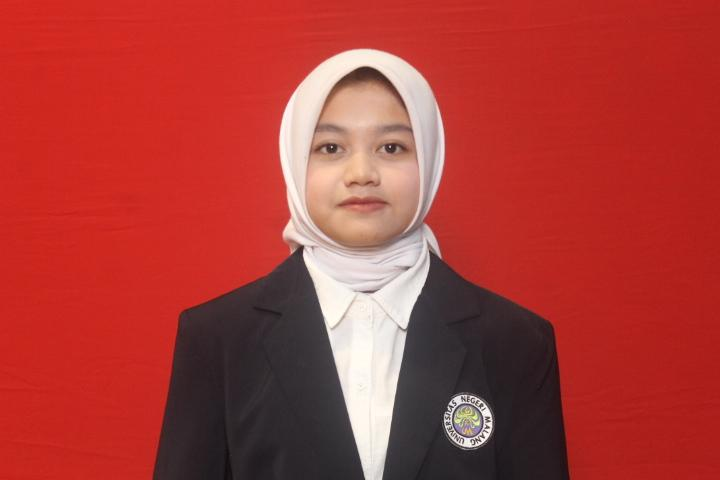
Dewi Aisyah Widiawati
Jurusan: Pendidikan Biologi
Universitas: Universitas Negeri Malang
Tentang Pengembang
Dewi Aisyah Widiawati sedang menempuh pendidikan S-1 Pendidikan Biologi di Universitas Negeri Malang sejak tahun 2024 hingga saat ini. Selama menjalani perkuliahan, aktif mempelajari berbagai bidang dalam pendidikan biologi, khususnya pengembangan media dan bahan ajar berbasis teknologi yang mendukung pembelajaran abad ke-21. Ketertarikan terhadap inovasi pembelajaran mendorong keterlibatan dalam pengembangan media pembelajaran interaktif yang dapat membantu peserta didik memahami konsep biologi secara lebih menarik dan bermakna.
Pendidikan yang sedang ditempuh membentuk pemahaman mengenai pengembangan instrumen dalam pembelajaran biologi dan penerapan teknologi dalam kegiatan belajar mengajar. Kompetensi tersebut diperkuat melalui keterlibatan aktif dalam mata kuliah yang berkaitan dengan pengembangan bahan ajar, media pembelajaran, evaluasi pembelajaran, dan desain pembelajaran inovatif. Selain itu, pengalaman dalam menyusun perangkat pembelajaran, instrumen penilaian, serta media digital turut mendukung kemampuan dalam merancang pembelajaran yang interaktif, kolaboratif, dan sesuai dengan kebutuhan peserta didik.
Email: dewi.aisyah.2403416@students.um.ac.id